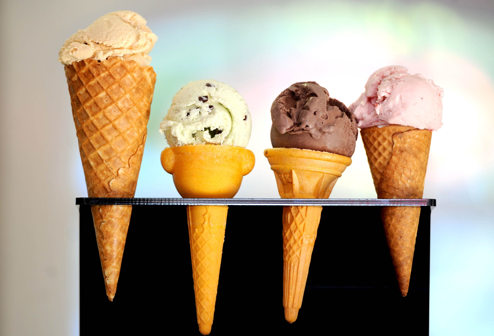
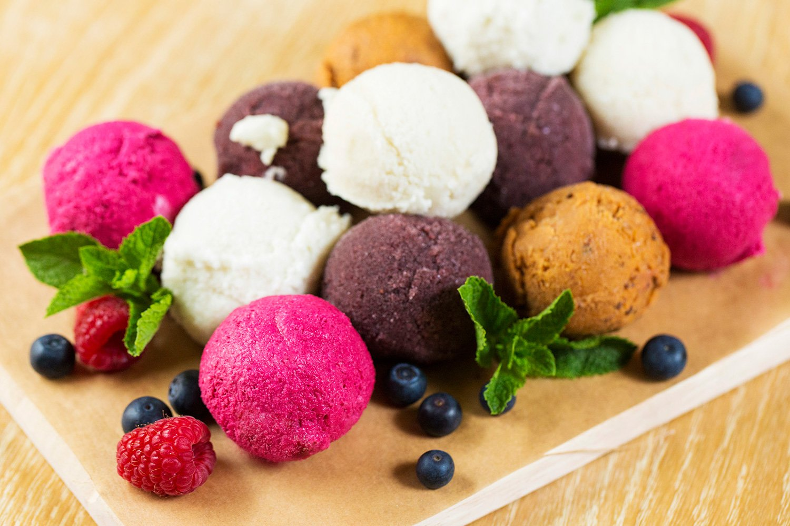
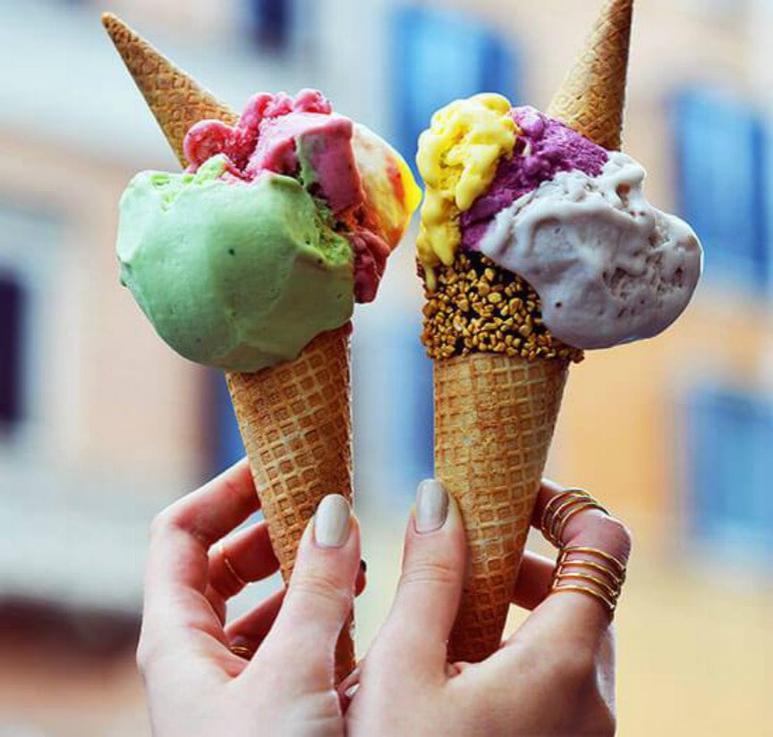
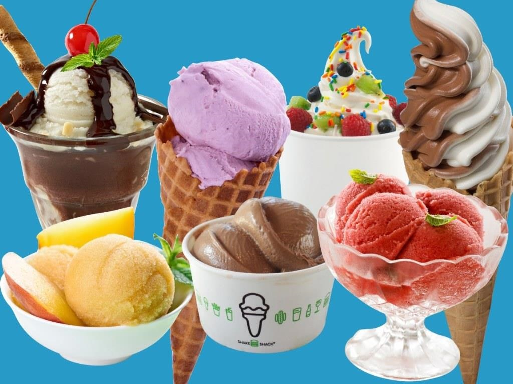

Виды мороженного!
Классическое мороженое: сливочное, молочное, крем-брюле, пломбир (на основе животных и/или растительных жиров)
Мелорин: на основе растительных жиров
Шербет: мягкое мороженое на основе фруктов, ягод, соков
Фруктовый лёд: относительно твёрдое мороженое на палочке на основе сока, обычно без молока
Строганый лёд: с мороженым, кусочками фруктов и сиропом
Итальянский лёд: замороженное фруктовое пюре с сиропом
Гранита: колотый фруктовый или шоколадный лёд с сахаром
Джелато: мягкое мороженое с добавлением ягод, орехов, шоколада и свежих фруктов 
Фалуде: замороженные нити из пищевого крахмала, с соками и иногда молотыми фисташками
Сандей: мягкое мороженое с кусочками фруктов, ягод, шоколада и топпингом
Американское парфе: десерт из слоёв мороженого, сливок, йогурта, желе
Парфе: десерт-мороженое из слоёв мороженого, сливок, яиц 
Спагетти-айс: десерт-мороженое в виде макарон
Запечённая Аляска: десерт-мороженое на бисквитной подложке с зарумяненными взбитыми яичными белками
Радужный лёд от Dippin’ Dots: маленькие твердые шарики-мороженое 
Банановый сплит, Персик Мелба и другие десерты из кусочков фруктов с мороженым, сиропом, орехами, взбитыми сливками и ягодами
Фруктовый (например, банановый) фостер: поджаренные фрукты с мороженым, маслом, сахаром и поджигаемым алкоголем
Семифредо: муссоподобное пирожное-мороженое и др.

Назад
©Юбко Артемий 2021г